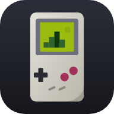

GBoy-JS

Desarrollado por BardockPlay
Carga un juego para guardar o cargar su partida.
Los ROMs se guardan en el almacenamiento local del navegador (localStorage; si no caben, en IndexedDB). Los juegos importados de una lista se descargan la primera vez que los juegas y después funcionan sin conexión.
Listas TXT
Listas incluidas en GBoy-JS. Pulsa «Usar» para cargarla en el editor, revisa la vista previa y pulsa Importar.
Escribir o pegar una lista
Un juego por línea, con los campos separados por |:
nombre | url | descripción | año | género | portada
Funciona con enlaces RAW de GitHub, no con cualquier URL.?
Enlaces que funcionan
https://raw.githubusercontent.com/usuario/repo/rama/juego.gb- La página del archivo en GitHub (
github.com/usuario/repo/blob/rama/…): se convierte sola a RAW. https://cdn.jsdelivr.net/gh/usuario/repo@rama/juego.gb- Servidores propios con HTTPS y la cabecera
Access-Control-Allow-Origin.
No funcionan: itch.io, FTP, «Releases» de GitHub, páginas web y la mayoría de servidores (bloquean la descarga desde el navegador).
Cómo copiar el enlace RAW: abre el archivo en GitHub y copia el enlace del
botón Raw. Para todos los de una carpeta abre
api.github.com/repos/usuario/repo/contents/carpeta?ref=rama y copia los
download_url.
Formatos: .gb, .gbc y .zip. Si un enlace no se puede
descargar, la ficha se crea igual: descarga el archivo tú mismo y usa Asignar archivo
en la ficha (⋯).
Solo el nombre y la URL son obligatorios (una línea con solo la URL también
vale). Se acepta --- como separador y las celdas copiadas de Excel o Google
Sheets. Las líneas que empiezan por # son comentarios y
#campos: url | nombre | … cambia el orden de los campos. Si una URL ya está en la
biblioteca, su ficha se actualiza.
Guarda la partida en cualquier momento y continúa justo donde la dejaste.
Códigos para . Se guardan para este juego y se aplican cada vez que lo abres.
Formatos: Game Genie (ABC-DEF o ABC-DEF-GHI) y
GameShark (01VVAAAA). Puedes pegar varios códigos de un mismo truco
separados por espacios. Algunos trucos pueden colgar el juego: desactívalos y carga un estado si
ocurre.
Se aplica a juegos de Game Boy original. Los juegos de Game Boy Color usan sus propios colores.
Personalizada
Toca una asignación y pulsa la tecla o el botón del mando que quieras usar. Funcionan los mandos Bluetooth y USB (Xbox, PlayStation, Switch Pro, 8BitDo, MFi…) y los mandos Bluetooth que funcionan como teclado. Los botones se muestran con nombres de Xbox (en PlayStation: A = ✕, B = ○, X = □, Y = △).
Sonido
Si un juego no suena en tu iPhone, usa «Reproductor multimedia». «Automática» ya lo usa en iPhone y iPad.
🔊 Si el sonido se pierde (por ejemplo, al volver tras bloquear el iPhone), toca la pantalla del juego: el sonido se reinicia.
Controles
Botones ◀◀ (rebobinar, mantener pulsado) y ½× (cámara lenta) en la pantalla, teclas R y Q. Puedes moverlos u ocultarlos en «Editar posición, tamaño y transparencia».
Pantalla
En automático y sin marco, la pantalla usa todo el ancho disponible. Los píxeles perfectos se aplican con el marco activado.
Los juegos de Game Boy preparados para Super Game Boy se muestran con su marco y sus colores (solo con el motor SameBoy).
Motor de emulación
SameBoy es uno de los emuladores más precisos que existen (WebAssembly). El motor ligero es JavaScript puro y sirve de alternativa. La partida guardada se comparte entre ambos; los estados guardados pertenecen al motor con el que se crearon. Al cambiar de motor, el juego se reinicia.
Guardado
La partida del cartucho se guarda automáticamente en tiempo real en el dispositivo.
Almacenamiento
Las fichas de la biblioteca se conservan: los juegos con URL se vuelven a descargar al pulsar «Jugar». Nunca se borran las partidas (.sav) ni los estados de las ranuras 1–4. Se guarda automáticamente el autoguardado de los 10 últimos juegos.
Privacidad
Usamos Google Analytics para saber cuánto se usa GBoy-JS y qué funciones se aprovechan (por ejemplo, qué juegos se inician o qué listas se importan). No se envían tus ROMs, partidas ni datos personales, y no se usa para publicidad.
Copia de seguridad
Exporta tus ajustes (controles, mandos, paleta, aspecto, pantalla y tema) y tu biblioteca (fichas, colecciones, favoritos y portadas) a un archivo .json para guardarlos o pasarlos a otro dispositivo. Los ROMs no se incluyen: los juegos con URL se vuelven a descargar al jugarlos.
La partida guardada por el juego se almacena automáticamente. Puedes exportarla como archivo .sav (compatible con otros emuladores) o importar una.
Teclado (configurable en «Mando Bluetooth y teclado»)
| Cruceta | Flechas / WASD |
| A | X / K |
| B | Z / J |
| Start | Enter |
| Select | Shift / Retroceso |
| Turbo | Espacio (mantener) |
| Rebobinar | R (mantener) |
| Cámara lenta | Q |
| Menú | Esc |
| Guardar / cargar estado | F2 / F4 |
También funcionan los mandos Bluetooth/USB (Xbox, PlayStation, 8BitDo…).
Motor principal: SameBoy © Lior Halphon (licencia Expat), compilado a WebAssembly, con sus boot ROMs de código abierto. Motor alternativo e interfaz basados en gemuboi.js. Debes usar copias de seguridad de juegos que poseas.

¡Bienvenido a GBoy-JS!
Entra en la sección Juegos para comenzar. :-)